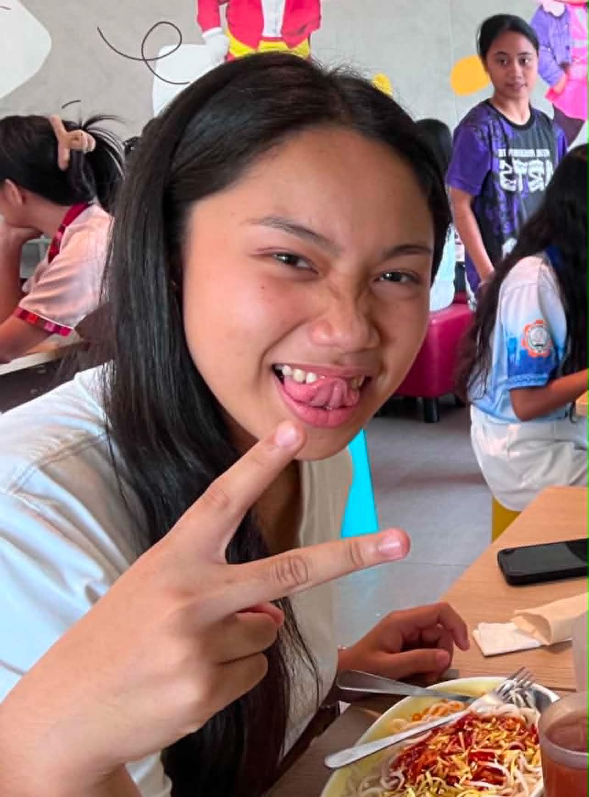

A letter for our beloved, kind, hard-drinking, precious woman!
Dear Keziah,
Eighteen years of you — we are very blessed to have you in our lives, Kizi!.
18 years ago, on the 17th day of the 6th month of the year, a baby was born, Kizi! I wrote this letter for you since you said you really appreciate these kinds of stuff. (I started writing this in 26th of May as a draft in my Notes app btw).
To my dearest (dearest?!) Keziah, Happy Birthday! You’re turning 18 na and I am glad to have met a woman like you. Let’s take a dive into all the things that I, or we, are proud of you for. Countless achievements have reached your hands not by accident but due to your unwavering effort in chasing them. When you told me that you sometimes doubt yourself, I found it hard to believe since you are already quite an accomplished woman. But medals and trophies, of course, aren’t the only things you bring to the table. Your character especially, is the blossoming trait you have. The warm kindness you show for your friends, the modesty you carry yourself with, and the oh-so-considerate love when it comes to your family. You have grown into the kind of woman and role model your younger siblings can look up to, and a lovely daughter to your mom and dad. I’m sure you’ve made the Lord also proud.
I’d like to recall the time when I began to have eyes for you back in 12th grade. I often reminisce that memory of me walking upstairs to my classroom when all of a sudden I felt drawn to look ahead of me, then after looking across to the next building, I watch as you tried to walk in those heels as our eyes met. I don’t solely base my feelings on appearance when it comes to liking someone, but I’d like to set that aside this time to say you looked so lovely in red. Contrary to that, looking through your socials and finding out you’re somewhat committed to our shared faith, you immediately passed one of my standards there😛. I found myself taking every chance I could get to catch a glimpse of you, especially your charming smiles. Lovely-looking, God-fearing, modest, and kind, so rare these days.
I’m really glad that we already have good moments together. Our first meet up where the atmosphere wasn’t awkward at all, our first meals in jollibee, and the long walks to here and there. Our first core memory when I unknowingly walked towards a kanal HAHAHAHHAHA😭 it was so unreal to hear you laugh your guts out. I love how we’ve never really fought. You’re quite smug about it lol but it’s true that it’s because you’re very understanding and kind, I can’t deny it. I also do my best to be patient with you when you get all emotional. It’s a collective effort that keeps us two in peace and that’s really nice. Even if we ever do fight about something, I’ll make sure to meet you where you’re at. Cheers to more memories!🍻 Thank God hindi ka KJ na tao. Everytime we're with each other it just feels like a chill hangout.
Let me talk about something that may be uncomfy—something funny but necessary. About this thing between us. I’m not sure where we’ll end up, I actually pray every night for God to take care of us and let things just go how they should. Whatever may happen in the end, just know it’s what Christ wills for us
There’s something I don’t want you to ever lose, something that fits you when you wear it—that benevolent smile of yours. And another thing you should always hold on to: your self-confidence. You need boldness coupled with delusional self-belief to catch up with your dreams. The universe rewards those who have the audacity. Take that as my advice. I also want to address one of your problems you shared with me—a problem with peer pressure. Let me change your perspective—try seeing it this way. High expectations of you mean people are confident in your skills and deem you capable, no one really expects much from someone incapable right? The pressure you feel is a privilege not everyone gets to experience. When the time comes for you to become your own person and going through the motions of adulthood, expect failures and low points at times but don’t muck around in your emotions. My advice is: you’re already at a low point, avoid making it worse by sinking in your negative thoughts. Cry, pray, and just get back up again.
Respect your parents. We often overlook to think about what our parents go through for us every day so to repay them, we have to be kind and considerate. After all, they’re the backbone of our everyday survival. You’re very privileged to have great parents, Kez. They’re humble, hardworking, and good people. I don’t know them well, but I can tell they’re the kind who are actually fit to be parents. But honestly Kez, you're already a great daughter😭 You help a lot around your house and you make the effort to assist your three siblings with getting ready for school. You're literally their personal hatid-sundo AHAHAHAHA. Deretso lang sa pagka-good daughter Kiz ah.
May Christ guide you and supply you with all your needs in all your endeavors today and tomorrow. I pray He’ll lay all the opportunites you need to your feet. For you to take them and weave them piece by piece, each stroke with purpose and each error with patience, meticulously woven until a lovely piece forms. A final piece—a mosaic of all your collective efforts. Everything piecing together a bright future—one where your loved are woven into as well.
"Happiest birthday, Keziah! Continue chasing the starts. So one day, when you look back, you'll realize you've gone beyond the sky!"
— Nathan🔥❤️